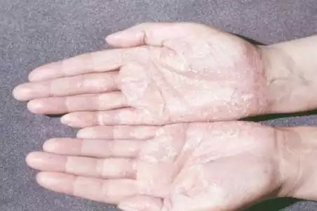
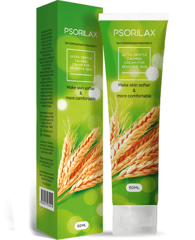
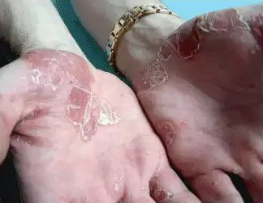

Ahoj! Jmenuju se Linda Horáková a je mi 36 let. Rozhodla jsem se povyprávět vám svůj příběh o boji s psoriázou. Toto téma je celkem citlivé, zejména pro ženy. Není jednoduché o něm mluvit... Psoriáza je komplikovaný zdravotní problém , který má také estetický dopad. Když máte na pleti nevzhledné skvrnky, život pro vás může být skutečným utrpením. Kromě svědění, otoků a loupání kůže musíte také snášet všechny lidi, kteří vás pomlouvají. Mnoho lidí si také myslí, že je psoriáza nakažlivá. Proto lidé, kteří psoriázou trpí, často musejí čelit izolaci a nemohou žít normálním životem... Já jsem ve věku, kdy už mě názory ostatních lidí moc nerozhodí, ale ani pro mě to nebylo vždy snadné...
Tento příběh začal zhruba pět pěti lety. Byla jsem ve sprše a ucítila jsem na své kůži okolo loktu strupy. Byly to první místa na mém těle, která byla zánětem postižena. Vypadaly jako malé růžové skvrnky a byly na dotek hrubé. Natřela jsem si je kosmetickým krémem. Myslela jsem si, že mám jen suchou kůži, protože o ni dostatečně nepečuji. Ne že bych se o sebe nestarala, vždy jsem si pečlivě vybírala kosmetické produkty. Nikdy jsem na nic neměla alergii.
Neobvyklé skvrnky se mi zhruba po třech týdnech začaly rozrůstat, takže jsem začala mít obavy. Šla jsem ihned k dermatologovi. Po pečlivé prohlídce mi lékař stanovil diagnózu: psoriáza. Byla jsem v šoku! Můj lékař mi předepsal klasickou léčbu - hormonální léky (masti a krémy) a homeopatické léky (koupele se solemi a bylinami). Tato léčba ale fungovala pouze dočasně. Skvrny zesvětlely a zbavila jsem se nepříjemných příznaků (svědění a zánětlivé reakce). Když jsem ale s touto intenzivní péčí přestala, všechny moje problémy se vrátily. Kromě toho se zdálo, že po hormonální léčbě se mi skvrny začaly na pleti objevovat mnohem rychleji. To celé trvalo zhruba 2.5 roku. Nakonec se mi psoriáza rozšířila na obě ruce. Když jsem zjistila, že mám skvrny také na nohou a na hýždích, byla jsem v šoku! Málem jsem zešílela. Moje situace byla horší právě proto, že jsem začala panikařit. Když jsem viděla komentáře ostatních lidí, kteří trpí psoriázou, byla jsem ještě více ve stresu. Někteří se nedokázali vyléčit ani za 15-20 let. Jiní s tímto problémem žijí celý život...
Stále jsem si kupovala všechny možné produkty na psoriázu v lékárnách. Krémy, kapky, spreje, všechno možné... zkusila jsem i alternativní metody léčby, jako jsou různé speciální bahenní lázně. Jednou jsem dokonce zkoušela svoji nemoc vymýtit pomocí nějakého starého kouzla. Pochopitelně jsem nedosáhla žádných výsledků. Můj problém ovlivňoval celý můj osobní i pracovní život a stále se zhoršoval. Styděla jsem se za sebe a za svůj vzhled, takže jsem byla podrážděná, agresivní a přecitlivělá. A nezdálo se, že by mi mohlo něco pomoci...
O léku jsem se dozvěděla od kamarádky, která má ráda přírodní metody léčby, které neobsahují žádné "těžké látky", jako jsou například hormony. Po všech mých experimentech s léky jí netrvalo dlouho mě přesvědčit. Koupila jsem si ještě ten den z webové stránky výrobce a začala jsem se léčit. Neměla jsem co ztratit, tedy kromě času a energie... abych byla upřímná, po tolika neúspěšných pokusech jsem už ani nedoufala, že dosáhnu pozitivního výsledku. Podle mého lékaře jsou v případě, že nepomohou hormony, všechny přírodní léky zbytečné.
Po 10 dnech léčby s , jsem si najednou všimla, že už mě kůže tolik nesvědí a nepálí. Někdy jsem dokonce i zapomněla na to, že mám psoriázu... Moje pleť také začala vypadat jinak. Skvrny začaly blednout a záněty se postupně vytrácely. Pleť už se mi tolik neloupala a byla opět jemná! Nemohla jsem tomu uvěřit! Nanášela jsem si na nové skvrny a ty ze začátku přestaly růst a potom úplně zmizely! Úspěch mojí léčby s mě ohromil a moc jsem se těšila, až budu mít léčbu za sebou. Po měsíci nebylo po mém problému ani stopy! Moje pleť vypadala stejně, jako dříve. Neměla jsem žádné skvrny, strupy, ani jiné známky psoriázy. Nic!
Po asi třech měsících jsem se úplně zotavila. Neměla jsem žádné nové skvrny, staré skvrny mi zmizely a zůstaly po nich jen tmavá místečka, která nejsou vůbec viditelná. Po nějaké době zmizely i tyto skvrnky. Nyní používám aktivně, jednou za dva měsíce. Možná to už není ani nutné. Každopádně nemá žádné kontraindikace ani vedlejší účinky, takže ho můžete používat i po dokončení léčby. Nemohu ani popsat, jak šťastná jsem. Chtěla bych díky svým zkušenostem pomoci všem, kteří hledají nějakou speciální léčbu a chtějí začít nový zdravý život bez psoriázy!
Nyní se s vámi podělím o informace o obsahu tohoto produktu. obsahuje 6 základních ingrediencí.
- Extrakt z ovesného mléka:
Má zklidňující účinky a pomáhá proti svědění. Také má mírný analgetický účinek na pleť a klouby. - Kyselinu mléčnou:
Má antibakteriální vlastnosti a pomáhá hojit rány. Jde o hlavní ingredienci, která pomáhá ostatním aktivním látkám dostat se do hlubších vrstev kůže. - Mandlový olej:
Snižuje zánětlivost a reguluje funkci mazových žláz. Také má zklidňující účinky. - Urea:
Zachovává v pleti vlhkost a pomáhá omezovat loupání kůže. Také pomáhá odlupování mrtvé kůže na postižených místech. Má antioxidační účinky a obohacuje pleť o vitamíny a minerály. - Glycerín:
Stimuluje pleť a zlepšuje regenerativní funkce kůže. Eliminuje pocit pálení a svědění a pomáhá odstraňovat mrtvé kožní buňky.
Isopropyl Palmitate, Carbomer, Ethoxydyglycol, Propylene Glycol, Glucose, Lactic Acid, Bisabolol, Triethanolamine, Phenoxyethanol, Decylene Glycol, Caprylyl Glycol. Tyto látky čistí pleť a chrání tělo před infekčními chorobami. Regulují metabolické procesy v hlubších vrstvách kůže, zlepšují krevní oběh a zpomalují proces abnormálního dělení buněk.
Je důležité si uvědomit, že autentické složení produktu obsahuje pouze jedinečný lék. lze objednat pouze z oficiálních webových stránek výrobce! Jinak riskujete, že si objednáte falešný produkt, který by mohl vaši nemoc zhoršit.
Speciální obsah produktu vám umožní používat ho v jakékoli fázi onemocnění. Když ho zkombinujete s tradičními metodami léčby, můžete také dosáhnout dobrých výsledků. Mimochodem mého lékaře také překvapily účinky produktu . Nyní ho používá jako hlavní nebo doplňkovou léčbu psoriázy pro všechny své paciety.
Naštěstí vám moje zkušenosti mohou pomoci získat zpět vaše zdraví. Moc ráda bych zodpověděla všechny vaše dotazy!
Komentáře
Helena, 30
Děkuji za tyto informace! Určitě to vyzkouším!
Viktorie, 25
V mém případě se psoriáza objevila před 9 lety... Zkusila jsem toho už tolik!!! Proč mi můj lékař nenabídl tento produkt? Je nový? 
Linda, 36
Tento produkt , je nový lék. Možná o něm váš lékař ještě neslyšel.
Eva, 33
Ano, je opravdu důležité používat pouze originální ! Já jsem si jednou bohužel koupila padělek a moje nemoc se zhoršila! Tento produkt v lékárně neseženete...
Linda, 36
Je nezbytně nutné používat originální produkt, jinak léčba nebude úspěšná. v lékárně neseženete. Nevyrábí se ve velkém. Je tedy nejlepší objednat si ho z oficiální webové stránky výrobce. Když si ho koupíte touto cestou, budete ho mít rychle a spolehlivě!
Michael, 39
Lindo, k těmto druhům léků přistupuji skepticky. Nevěřím tomu, že směs olejů a "chemických" antiseptik může vyléčit psoriázu! Buď jste měla jen mírnou formu této choroby, nebo jste ji neměla vůbec!
Linda, 36
Michaeli, diagnózu mi provedl zkušený a spolehlivý lékař. Mohu potvrdit, že jsem svoji nemoc nezanedbávala. Šla jsem k lékaři hned, jak jsem si všimla prvních příznaků. Na druhou stranu ale znám i situace, kdy pomohl mnoha lidem, kteří trpěli psoriázou i více než 10 let.
Marie, 28
Také trpím prvním stádiem této nemoci. Rozhodně to vyzkouším! Nechci své zdraví zanedbávat.
Andrej, 51
Souhlasím s Lindou! může pomoci každému, bez ohledu na to, v jaké fázi nemoci se nachází. Také jsem si to zkusil. Léčil jsem se 7 let. Po tom, co jsem vyzkoušel , se můj stav zlepšil za pouhý měsíc! Rozhodně vám mohu poradit, abyste ho také zkusili!
Valerie, 47
Musím říct, že zmírnil projevy psoriázy u mého muže během 2-3 měsíců. Jeho nemoc byla v pokročilém stádiu, ale nyní se cítí mnohem lépe. Nemohl brát hormony a trpí alergiemi na masti. pro něho byl ideální!
Anna, 35
Děkuji vám, že jste se s námi podělila o své zkušenosti! Trpěla jsem depresemi stejně jako vy... Moje nemoc se stále zhoršuje a tradiční léčba mi vůbec nepomáhá.
Linda, 36
Nevzdávejte to, Anno! Všechno bude v pořádku! Věřím, že i vám tento krém pomůže!
Alex, 19
Mohu používat když mám alergii na mandle?
Linda, 36
Raději bych se poradila s lékařem. Nevybavuji si žádný případ, kdy by někomu způsobil alergickou reakci. Mnoho lidí, kteří používají, často trpí alergickými reakcemi.
Kateřina, 44
Jak mohou tyto oleje vyléčit tuto nemoc? Skvrny na kůži jsou pouze jejím projevem...
Linda, 36
Oleje vás nevyléčí. Pouze pomohou vašemu tělu tento problém vyřešit. Upraví metabolické procesy v kůži, dodají vám vitamíny a minerály, zlepší krevní oběh atd. Celkově zlepší váš zdravotní stav.
Honza, 29
Vypadá to dobře, zkusím to! Svědění mě otravuje a žít s touto nemocí je nepříjemné!
Alice, 40
Mohu potvrdit, že pomohl i mně, ale ne tak rychle, jako ve vašem případě. Já jsem ale trpěla psoriázou mnohem déle, zhruba 10 let.
Jan, 37
Moje léčba s produktem trvala 6 měsíců. Rozhodně toho nelituji. Je to jediný produkt, který mi skutečně usnadnil život. Žádný jiný produkt mi tak nepomohl, dokonce ani po roce léčby.
Ágnes, 18
Váš příběh mi moc pomohl. Začnu se léčit s tímto produktem a brzy budu znovu zdravá!
Simona, 28
Proč používáte i po vyléčení? Je to nutné? Nemůže to být návykové?
Linda, 36
Samozřejmě to není nutné! Návykové to ale také není. V mém případě jsem měla skvrny na velké části těla. Zůstaly mi po nich stopy. Řekla bych, že jsem asi příliš opatrná, i když mi lékař řekl, že už se nemám čeho bát.
Katka, 48
Děkuji za váš příběh!!! Najednou jsem začala věřit, že se můžu zbavit psoriázy! Brzy vám napíšu své dojmy z léčby s produktem !
Jiří, 59
Zkusil jsem minulý rok a moc mi pomohl. Mohu ho všem doporučit.
Jakub, 32
Moje máma tento lék používala měsíc. Je z něj nadšená! Nemá žádné nové skvrny a ty staré postupně mizí. Doufám, že se psoriázy zbaví jednou provždy.